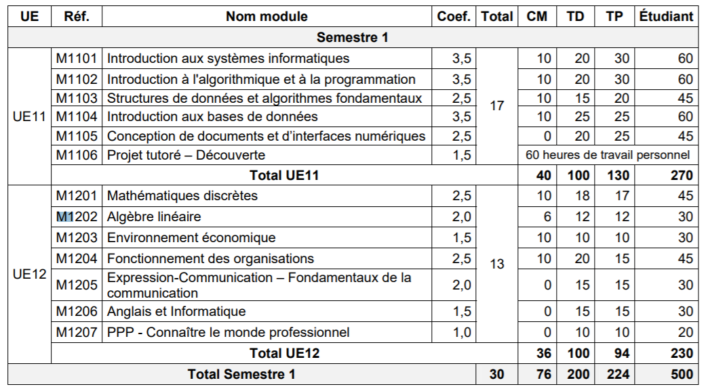
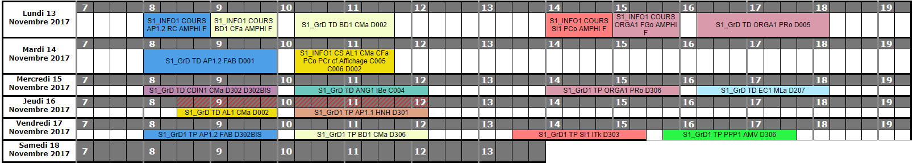
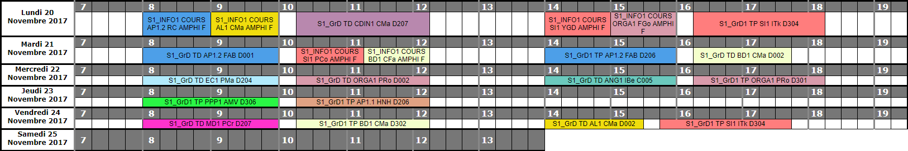

Projet CDIN | Les Métiers de l'Informatique
Foire aux questions
Comme tous les étudiants, avant de se lancer dans les études supérieures, nous nous sommes posés énormement de questions.
Voici une liste des interrogations récurrentes que les étudiants peuvent se poser avant d'entrer.
Scolaire
- Qu’est ce que l’IUT / DUT ?
- IUT signifie Institut Universitaire de Technologie alors que le DUT
veut dire Diplôme Universitaire de Technologie. Donc l’IUT
(école) est le lieu où nous obtenons le DUT (diplôme). - Quels sont les avantages de ce choix ?
-
- Une formation professionnalisante
- Un diplôme international
- Être encadré par différents IUT informatique
- Méthode pédagogique diversifiée (TP, TD, amphi)
- Insertion professionnelle rapide ou poursuite d’études supérieures - Qu’est-ce que l’IUT Informatique ?
- L’objectif de l’IUT informatique est de former des informaticiens capables de
participer à la conception, la réalisation et la mise en œuvre de solutions informatiques
au service des utilisateurs.
Parmi les domaines visés : l'informatique pour l'entreprise, l'informatique embarquée
les objets connectés et autres applications web... - Comment se passe un semestre ? 
- Il y a environ 500 heures de cours par semestre, environ 36 heure de cours,
contre 100 heure de TD et 94 heure de TP. - Que signifie UE et module ?
- Juste au-dessus, nous pouvons différencier deux types de « UE » (unité d’enseignement),
l’UE 11 et l’UE 12, chacun est composé de plusieurs matières et a un coefficient différent.
L’objectif du semestre est de validé ces différents UE, pour ce faire il faut avoir au-dessus de 8 de moyenne
pour chaque UE et la moyenne des deux doit être supérieure ou égale à 10 pour valider son semestre.
Chaque UE est composée de différentes matières appelées modules, il
s’agit des différents cours, cependant en IUT Informatique, chaque semestre
sera composé de deux UE. Le premier regroupera les différents modules par-rapport
à l’informatique. Alors que le second sera ce que l'on pourrait nommer le « tronc commun » regroupant
des modules comme l’anglais, les maths ou encore l’économie. - Mais comment se passent ces différents semestres ?
- En effet, tous les semestres ne sont pas composés de la même façon, le premier et le deuxième
se ressemblent alors que le troisième et le quatrième sont différents. Au semestre 3,
il faudra choisir entre différents parcours pour se spécialiser. Certains sont plus accessibles pour une
poursuite d’étude longue alors que d’autres sont pour une insertion professionnelle rapide. Puis au semestre 4,
il faudra effectuer un stage de 10 semaines en entreprise, il
s’agira d’un point très important pour pouvoir valider son semestre et donc son DUT. - Très bien, mais à quoi ressemble un emploi du temps hebdomadaire en IUT ? 
- Comme vous pouvez le voir, l’emploi du temps peut varier, il peut y avoir des semaines
avec des heures libres mais aussi des semaines à temps plein. Seul le jeudi après-midi sera
"balisé", car il s’agit du créneau pour les différentes activités sportives. Il est également aussi possible d’avoir
cours le samedi matin. Cependant, cela est sans compter le travail personnel.
Finir les TP, les TD, les devoirs maisons ou encore
préparer les différents examens ou tests. - Quels sont les différents cours ?
- Il y a de nombreux cours en première année :
- Anglais et informatique
- Expression et Communication
- Environnement économique
- Algèbre linéaire
- Introduction à l'algorithmique et à la programmation
- Structures de données et algorithmes fondamentaux
- Introduction aux bases de données
- Conception et Développement d'une Interface Numérique
- Fonctionnement des organisations
- Introduction aux systèmes informatiques
- Mathématiques discrètes
- Connaître le monde professionnel
- Projet Tutoré - Les projets font-ils partie du cursus de l'IUT ?
- Effectivement, au cours des différents semestres, plusieurs projets devront être réalisés
comme la conception d’un jeu sous C++ ou encore la création d’un site web sur
les métiers de l’informatique.

Vivre à La Rochelle
- Est-ce que La Rochelle est une bonne ville pour étudier ?
- La réponse est oui ! Il se trouve que cette année, d'après l'Étudiant,
La Rochelle est l'une des villes dans lesquelles
il fait bon étudier. - L'ambiance est la même dans les universités que dans les IUT?
- Non. En réalité, si l'ambiance est si bonne entre les première et les
deuxième années d'IUT c'est parce que nous n'avons pas de
concours, il n'y a donc pas de compétitions entre les étudiants. - Est-ce une ville qui coûte chère ?
- La ville en elle même ne coûte pas si chère. Les loyers en revanche sont
plutôt élevés, surtout dans le centre-ville.
Info pratique
- Comment se déplacer à La Rochelle ?
- Sur la carte qui se trouve en dessous, vous pouvez remarquer plusieurs
points d'intérêt auxquels vous souhaiterez, sans doute, vous rendre.
Pour ce faire, vous pouvez utiliser les lignes de bus Yelo, vous y rendre à pieds. - Comment se préparer à l'IUT ?
- Si vous souhaitez entrer en IUT et être dans les meilleures conditions,
nous vous conseillons d'avoir déjà quelques bases en programmation et en
informatique. Ce n'est pas obligatoire mais cela peut grandement vous aider. - Je vis loin de La Rochelle, comment rentrer chez moi ?
- Il existe plusieurs moyens de transport pour rentrer chez vous. Nous sommes nous
même logés relativement loin et nous allons vous aider. Vous pouvez déjà :
- Vous renseigner sur les trains de la SNCF ...
- Vous inscrire sur Blablacar - Je suis fauché, comment cuire mes pâtes ?
- Nous connaissons cette galère. Pour bien faire cuire ses pâtes, il faut
faire bouillir de l'eau dans une casserole de type propre. Une fois ceci fait,
vous devrez ajouter vos pâtes de type nouille dans l'eau et attendre.
Il y a différent types de cuissons.